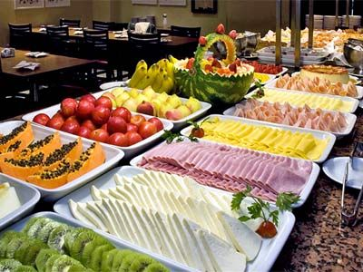

Receita de Panqueca americana | CyberCook
2021.06.21 21:33
MEU LIVRO DE RECEITAS
Tenha o seu, é grátis!
Acesse aqui Página InicialReceitas
Blog CyberCook #ComerEmCasaVídeos
+Sugestões
Envie sua receitaInício /
Receitas /
Massas /
Panqueca americana (café da manhã)
Panqueca americana (café da manhã)
vegetariana ( 19 ) Avaliar receitaPreparo
30 min
Calorias*
657,79 kcal
Porções
2
Por porção
R$ 2,42
+ informações nutricionais Salvar receitaQuer um café da manhã especial? Seja para um simples ou um inusitado, no Brasil ou nos Estados unidos, essas panquecas são perfeitas ! Confira!
Ingredientes
Farinha de trigo 1 xícara (chá) Açúcar 4 colheres (sopa) Fermento químico em pó 3 colheres (chá) Ovo 2 unidades Leite 1 xícara (chá) Manteiga 2 colheres (sopa) Sal 1 pitada Manteiga a gostoCompre os ingredientes no
Compre sem sair de casaComo Fazer
1. Misture todos os secos , em outro recipiente misture os líquidos mexendo bem .
2. Junte os dois , secos e líquidos sem bater , e nem mexer muito.
3. Unte a frigideira e com o auxilio de uma concha coloque porçoes e frite por aproximadamente um minuto de cada lado ou ate ficar douradinha em fogo médio.
Aproveite o que sobrou
A gente te ajuda a reduzir o desperdício
Aproveitarpor Luciana Lopez Ávila Lopes Ávila
Massas Receitas de panqueca Massa de panqueca Salvar receita Envie sua receitaAvalie esta receita
Compartilhe o resultado
Veja Mais
Cozinha Sustentável
Coma Bem, Viva Bem
Peixes Selvagens do Alasca
Mais Sabor com Mococa
Vamos temperar?
#ComerEmCasa 3
Festa Junina
Recomendamos pra você
COMENTÁRIOS
ComentarDemir Guilherme
01/03/2021
Pode fazer sem ovo
CyberCook
16/03/2021
Olá, Demir! Pode sim, mas vai mudar a consistência e ficar menos macia.
Manuh
05/02/2021
MELHOR RECEITA QUE EU JA VI faço sempre e fica MA-RA-VI-LHO-SO ❤️❤️❤️
CyberCook
05/02/2021
Oi Manuh! Que bom que gostou da receita, é uma das nossas favoritas também! Abraços.
Gisele Ohana
31/08/2020
pode fazer a receita sem o leite?
CyberCook
01/09/2020
Oi Gisele! Para essa receita o leite realmente é importante. Você pode usar leite integral, desnatado ou algum leite vegetal :) Depois nos conte como ficou. Abraços.
Melissa
28/07/2020
A minha panqueca ficou super gostosa! Eu fiz toda a receita que dá 2 porções , mas deu uma pilha inteirinha dessas panquecas super fofinhas! Eu coloquei um pouco de mel silvestre junto e ficou uma delícia! ADOREI A RECEITA!!!
CyberCook
29/07/2020
Oi Melissa! Que bom que gostou da receita! Ficamos super felizes com seu comentário :) Abraços.
Melissa
13/08/2020
:)
Juliana
04/07/2020
Fiz apenas metade da receita e rendeu mais do que esperava. As panquecas ficaram bem fofinhas e saborosas. Amei a receita
CyberCook
06/07/2020
Oi Juliana, tudo bem? Que bom que gostou da receita :) Envie a foto das suas panquecas para postarmos no site! Abraços.
Letícia
12/04/2020
Posso fzr sem fermento?
CyberCook
13/04/2020
Oi Letícia, tudo bom? Pode sim, mas tenha em mente que ela não irá crescer e ficar fofinha. Ficará mais próxima da nossa panqueca brasileira, tipo folha . Depois nos conta como ficou? :) Abraços,
Lorrayne Natal
14/01/2020
Olá! Não possuo mto tempo pela manhã para fazer TD receita, poderia preparar a massa na noite anterior e fazê-la na manhã seguinte? Obg.
CyberCook
14/01/2020
Oi Lorrayne, tudo bem? Muito obrigada pelo seu contato :) Sim, você pode preparar a massa na noite anterior mas recomendamos que coloque o fermento apenas no momento de preparo das panquecas. Além disso, o ideal seria deixar a massa fora da geladeira cerca de 10 minutos para que ela se aproxime ao máximo da temperatura ambiente. Depois nos conte como ficou. Abraços.
Kamila
17/11/2019
Muito boa amei é rapida e pratica a minha saiu uma delicia
CyberCook
18/11/2019
Oi Kamila, tudo bem? Obrigada pelo seu comentário :) Ficamos felizes em saber que gostou dessas panquecas deliciosas! Envie uma foto da sua receita para postarmos no site e nas redes sociais! Abraços.
Josie Moreira
26/05/2017
Muito saborosa acrescentei baunilha.
Lica
31/08/2016
Amei total! Parabéns, ótima a receita!
Ver mais comentáriosSIGA O CYBERCOOK!
Sobre nós
Fale com a gente Trabalhe conosco Política de privacidade Termos de uso Solicitação de dados pessoaisNossa seleção
Panqueca Bolo de Mandioca Diet Frango à Passarinho na Air Fryer Receitas de até 30 minutos Pizza Low-Carb De Frigideira Carne de Jaca Vegana Receitas de Saladas e BowlsCategorias
Saladas Legumes Carnes Aves Massas Peixes e frutos do mar DocesCopyright © 2021 e-Mídia Informações Ltda - CyberCook é uma propriedade e-Mídia.
- 13 dicas para um café da manhã nutritivo - Caldo Bom
- Receitas de café da manhã: 7 opções para sair da rotina .
- 10 receitas de café da manhã saudável em até 5 minutos .
- Especial café da manhã - Panelinha
- Receita de Panqueca americana | CyberCook
- 8 sugestões para um café da manhã saudável, delicioso e .
- → 20 melhores RECEITAS PARA O CAFÉ DA MANHÃ .
- 11 receitas para o café da manhã para começar o dia bem
- 15 ideias de café da manhã para começar o dia bem
- 32 receitas que vão te ajudar a preparar um café da manhã .
- 13 dicas para um café da manhã nutritivo - Caldo Bom
- Receitas de café da manhã: 7 opções para sair da rotina .
- 10 receitas de café da manhã saudável em até 5 minutos .
- Especial café da manhã - Panelinha
- Receita de Panqueca americana | CyberCook
- 8 sugestões para um café da manhã saudável, delicioso e .
- → 20 melhores RECEITAS PARA O CAFÉ DA MANHÃ .
- 11 receitas para o café da manhã para começar o dia bem
- 15 ideias de café da manhã para começar o dia bem
10 saudável em até 5 minutos · 1. Bolo de chocolate com 3 ingredientes · 2 . - 32 receitas que vão te ajudar a preparar um café da manhã .
10 saudável em até 5 minutos · 1. Bolo de chocolate com 3 ingredientes · 2 .
